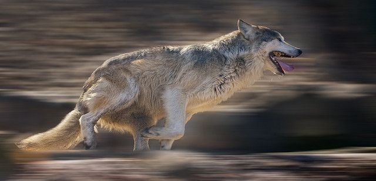
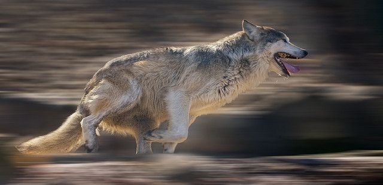

Images of Wolves

 

About Wolf
Wolves are magnificent carnivorous mammals known for their social behavior, intelligence, and adaptability.
Here
are some key details about wolves, including their habitat, size, and other characteristics:
Habitat:
Wolves are highly adaptable and can be found in a wide range of habitats, including forests, grasslands, tundra,
and deserts. They are native to North America, Eurasia, and parts of Africa. Their specific habitat can vary
depending on the species and region.
Species:
There are several species of wolves, with the most well-known being the gray wolf (Canis lupus). Other notable
species include the red wolf (Canis rufus) and the Ethiopian wolf (Canis simensis). Gray wolves have the widest
distribution and can be found in North America, Eurasia,
and even parts of North Africa.
Size and Appearance:
Gray wolves are the largest of the wolf species. They typically measure around 2.5 to 3.5 feet (0.76 to 1.07
meters) tall at the shoulder and 4.5 to 6.5 feet (1.4 to 2 meters) in length, including their tail.
Their weight can vary, but adult gray wolves typically weigh between 60 to 175 pounds (27 to 79 kilograms).
However, some individuals in exceptional conditions may exceed these weights.
Social Structure:
Wolves are known for their strong social bonds and hierarchical pack structure. A typical wolf pack consists of
an
alpha pair (the dominant male and female), their offspring, and sometimes other subordinate members.
They work together to hunt, raise pups, and defend their territory.
Diet:
Wolves are carnivorous predators and primarily hunt large ungulates such as deer, moose, elk, and bison. They
are
also opportunistic feeders and will consume smaller mammals, birds, and occasionally plant matter.
Communication:
Wolves communicate using a variety of vocalizations, including howls, growls, barks, and whines. Howling is
particularly well-known and serves various purposes, including pack communication, territory marking, and
coordinating hunts.
Conservation Status:
The conservation status of wolves varies by species and region. Gray wolves, for example, have faced significant
population declines in the past due to habitat loss and persecution. Conservation efforts and legal protections
have helped some
populations recover, but they are still listed as a species of concern in some areas.
Role in Ecosystem:
Wolves play a crucial role in maintaining the health and balance of ecosystems. By controlling the population of
herbivores, they indirectly influence vegetation and other wildlife species. Their presence can have cascading
effects throughout their habitat.
Cultural Significance:
Wolves have held cultural significance in many societies throughout history. They have been revered and feared,
often appearing in mythology, folklore, and art. They symbolize a wide range of qualities, including strength,
freedom, and wildness.
It's important to note that specific details about wolves can vary depending on their location and species.
Wolves
have a complex and fascinating natural history that continues to be studied and celebrated by researchers and
wildlife enthusiasts worldwide.